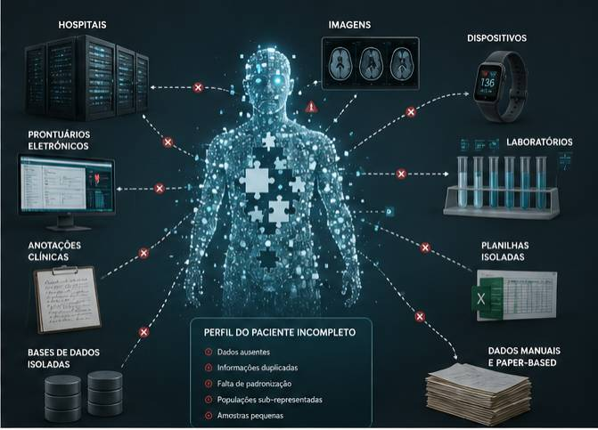
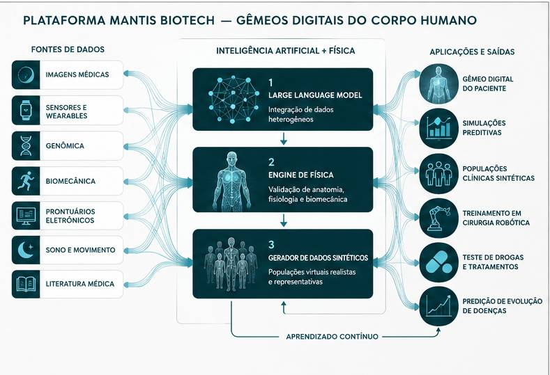
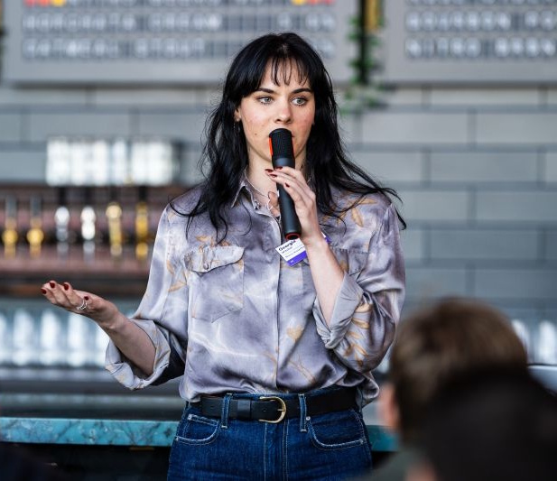
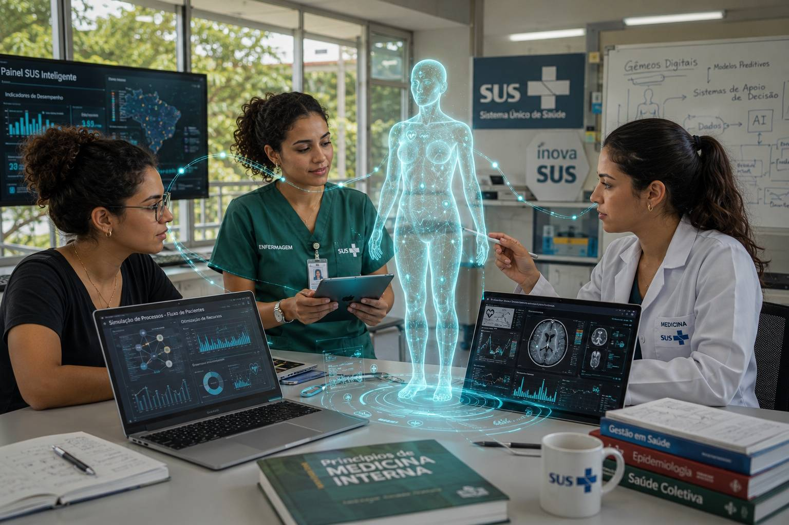

A medicina moderna tem um problema de dados — e ele é muito maior do que parece
Modelos de IA prometem revolucionar a pesquisa biomédica: acelerar descoberta de fármacos, prever doenças raras, treinar robôs cirúrgicos. Mas todos dependem de um combustível escasso: dados humanos de qualidade, representativos e acessíveis.
O problema é estrutural. Ensaios clínicos recrutam historicamente populações homogêneas. Doenças raras têm poucos pacientes. Dados cirúrgicos ficam presos em sistemas hospitalares isolados. E privacidade impede o uso indiscriminado de dados reais.
"Não temos dados suficientes sobre pessoas suficientemente diversas. E a forma tradicional de obtê-los está atingindo limites físicos e econômicos."
— Georgia Witchel, CEO, TechCrunch 2026
⚠️ Os 80% e US$15M são dados da própria Mantis, ainda não verificados independentemente. O custo de $2,6B por aprovação é amplamente documentado pela indústria.

Digital Twins: uma cópia virtual e física do seu corpo
A Mantis constrói gêmeos digitais humanos — modelos preditivos de anatomia, fisiologia e comportamento ancorados em física. Não são simulações genéricas: são representações personalizadas alimentadas por dados reais de múltiplas fontes, refinadas por um motor de física que garante que o corpo virtual se comporte como o corpo real.
A chave é combinar três camadas: um LLM para integrar e validar fontes heterogêneas, um motor de física para ancorar o sintético na realidade anatômica, e um gerador de datasets que expande poucos casos reais em milhares de cenários simulados.

Como a plataforma funciona:
Do campo de basquete ao ensaio clínico de Fase III
O que torna a Mantis credível não é apenas o conceito — é que já tem clientes reais. Começou em esportes de alta performance e está expandindo para medicina e defesa.
Esportes de Elite
Um time da NBA já é cliente ativo. A Mantis cria representações digitais de atletas mostrando como saltos mudam ao longo do ano com sono, carga de treino e saúde. Prevenção de lesões antes que aconteçam.
Robótica Cirúrgica
Treinar robôs cirúrgicos exige dados raros. A Mantis gera datasets sintéticos de alta fidelidade — ex: reconstruir poses de mão com dedo amputado, sem pacientes reais.
Ensaios Clínicos / FDA
Simular como pacientes diversificados respondem a tratamentos antes dos ensaios reais. Populações sub-representadas modeladas sem barreiras éticas ou logísticas.
Doenças Raras
Expandir 10 casos reais em 10.000 simulações físicas plausíveis. Desbloqueia modelos de IA para condições que hoje não têm dados suficientes para qualquer pesquisa.
Saúde Preventiva
Visão de longo prazo: gêmeos digitais para o público geral, prevendo riscos de saúde antes dos sintomas. Personalização de prevenção em escala de milhões.
Defesa
Modelagem de performance humana em condições extremas. A fundadora é pragmática sobre este mercado e vê a tecnologia como inevitavelmente presente no setor de defesa.

Georgia Witchel, 24 anos — atleta olímpica, dropout, founder serial
A trajetória de Georgia não é de alguém que seguiu o script convencional. É de alguém que construiu a partir do zero — no gelo, na academia e no Vale do Silício.

24 anos · Nova York, EUA
Da parede de gelo ao potencial de IPO
- ~2008Durango, Colorado: família se muda para cidade pequena. Georgia começa como guia de escalada para pagar contas na adolescência.
- ~2013–20168 recordes mundiais: monta o primeiro time competitivo dos EUA em escalada no gelo. Vencem World Cup com 15 anos. Primeira pessoa a representar escalada numa plataforma olímpica (Lillehammer, 2016).
- 2016Dropout consciente: abandona o ensino médio e a escalada de alta performance. Percebe que ama construir — não competir.
- 2016–2022Harvey Mudd College (CS + Psicologia) → Johns Hopkins (Matemática Computacional) → Univ. of Washington (Bioengenharia, mestrado).
- 2022–2024Louiza Labs (YC): primeira empresa — motor de física para gêmeos digitais em cirurgia robótica e ensaios FDA simulados.
- 2025Mantis Biotech: funda e levanta US$ 7,4M seed com Decibel VC, Y Combinator e Liquid 2.
- Março 2026Saída do stealth: TechCrunch cobre o lançamento. Cliente NBA confirmado. Foco em farmacêuticas, FDA e saúde preventiva.
💡 Por que isso importa para você: Georgia foi a primeira pessoa a usar software de estimação de pose para melhorar a própria performance atlética — e depois construiu soluções comerciais em cima disso. A Mantis nasceu da combinação incomum de experiência corporal + computacional de uma atleta que virou engenheira.
Além do hype: o que já existe de concreto
✅ Evidências que sustentam a proposta
⚠️ Desafios e questões em aberto
- 🔎Validação regulatória pendente: dados sintéticos para uso em ensaios FDA precisam de aprovação específica — caminho ainda longo e incerto.
- 📊Métricas próprias sem auditoria: os 80% e US$15M são dados da própria Mantis, sem verificação independente — comum em fase seed, mas a confirmar.
- 🤖Sim-to-real gap: garantir que o gêmeo digital seja fiel o suficiente ao corpo real para decisões clínicas críticas é o desafio técnico central do setor.
- ⚖️Ética dos dados preditivos: quem controla o gêmeo digital de uma pessoa? A própria Georgia reconhece dilemas sérios e não tem todas as respostas.
- 🏢Empresa muito pequena: com 3 funcionários (2025), escalar para farmacêuticas e redes hospitalares exige crescimento massivo.
Por que isso muda o seu campo — dependendo do seu curso
A Mantis não é apenas uma empresa de tecnologia. É um caso de convergência entre engenharia, dados, medicina e operações. Cada curso tem uma lente diferente para enxergar esta proposta.
| Curso | Por que importa | Conceitos do seu currículo aqui presentes |
|---|---|---|
| ⚙️ Engenharia de Produção | Gestão de cadeia de dados clínicos, otimização de processos em ensaios, redução de desperdício em P&D farmacêutico. A Mantis aplica lean thinking à pesquisa biomédica. | Gestão de processosSimulaçãoQualidade de dadosSupply chain de P&D |
| 🩺 Enfermagem | Dados de monitoramento contínuo (sono, sinais vitais, movimentação) são matéria-prima dos gêmeos digitais. Enfermagem será responsável por coletar e validar esses dados no ponto de cuidado. | Registros eletrônicosMonitoramentoÉtica em dadosLGPD / HIPAA |
| 🔬 Medicina | Ensaios clínicos mais rápidos, baratos e diversos. Doenças raras com dados suficientes. Robótica cirúrgica treinada em simulação. A medicina do futuro será co-projetada com IA generativa. | Metodologia de ensaiosMedicina de precisãoBioéticaRegulação FDA/Anvisa |

Auê sem sentido — ou aposta real?
A Mantis Biotech não é uma ideia vaga com um deck bonito. É uma empresa com investidores top-tier, cliente pagante confirmado, fundadora com histórico comprovado e um problema a resolver que nenhum profissional de saúde nega.
O ceticismo saudável existe: dados sintéticos ainda precisam de validação regulatória para uso clínico, e a empresa é pequena para os mercados que quer conquistar. Mas as peças estão no lugar certo para uma startup nesta fase.
O que distingue a Mantis é a especificidade técnica: não vende análise genérica — vende a capacidade de criar dados que não existiam, com rigor físico. Isso é raro, e resolve um problema que a indústria está disposta a pagar.
Ainda é cedo — a empresa saiu do stealth em março de 2026. Os próximos 18–24 meses dirão se a tecnologia entrega em escala clínica.
🎯 Para ficar de olho: regulação da FDA para dados sintéticos em ensaios, expansão além do esporte, e primeiros resultados em peer review.